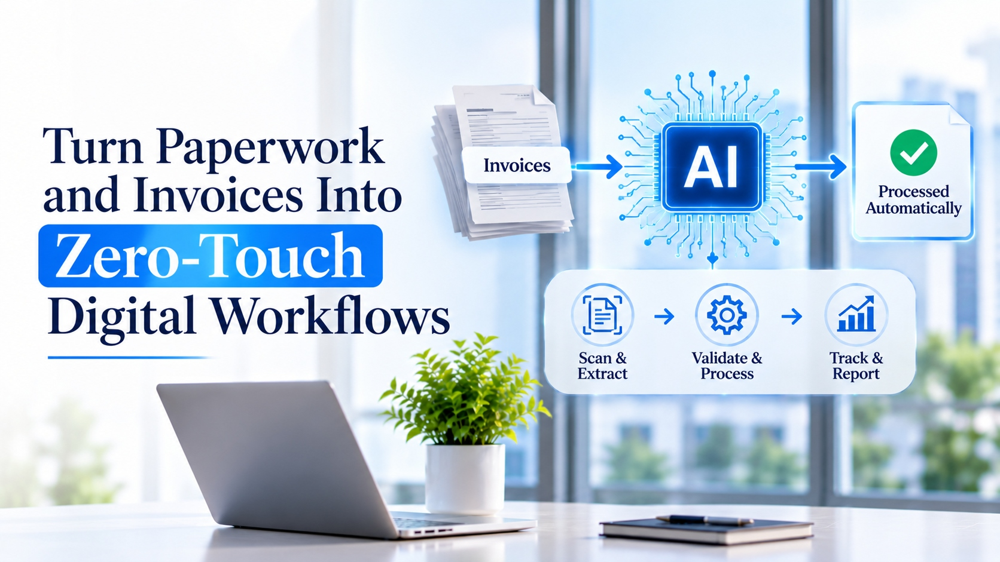

// document automation
Turn Paperwork and Invoices Into Zero-Touch Digital Workflows

Every finance, procurement, and operations team knows the pile: invoices in inboxes, forms in scans, approvals chasing people across departments. Each document is typed, checked, and forwarded by hand. The work is slow, repetitive, and a quiet source of errors.
Teams that fix this usually adopt intelligent business process automation to read documents, check them against business rules, and route them without anyone touching the routine ones.
The goal is not to remove people. It is to make sure people only see the documents that genuinely need judgment.
What the machine sees
A document becomes a set of fields, each with a confidence level. Confidence decides what happens next.
vendorHigh confidenceautoinvoice_dateHigh confidenceautopo_referenceLow confidencereviewtotal_amountHigh confidenceauto
Illustrative only. Real thresholds are set per field and tuned on your own documents.
Six stages from paper to posted
- 01
Capture
Email, upload, scan, or portal. Every source lands in one queue with the original file stored.
- 02
Classify
Is this an invoice, a purchase order, a receipt, or a form? The type picks the rules.
- 03
Extract
Pull vendor, dates, line items, and totals as structured fields with confidence scores.
- 04
Validate
Check formats, required fields, duplicates, and known vendors before anything moves on.
- 05
Match and route
Compare against orders and receipts, then send to the right approver by amount and department.
- 06
Post and archive
Write to the system of record and keep an audit trail linked to the source document.
Three-way matching, automated
The most valuable rule in accounts payable is also the easiest to automate: agree the invoice with the order and the receipt.
| Compare | Against | If it matches | If it does not |
|---|---|---|---|
| Invoice lines | Purchase order lines | Continue | Flag price or quantity variance |
| Invoiced quantity | Goods or service receipt | Continue | Hold until receipt is recorded |
| Vendor and bank details | Vendor master record | Continue | Send to verification |
| Invoice number and amount | Previously processed items | Continue | Block as possible duplicate |
Tolerances, such as an acceptable price difference, are business decisions. Set them with finance, not with the tool.
Exceptions are the design, not the afterthought
Zero-touch applies to the routine path. A good system makes the unusual path fast for the person who handles it.
Low confidence
Show the document beside the extracted field. The reviewer confirms or corrects in one click.
Rule failure
Say which rule failed and why, so the owner does not have to investigate.
Learning loop
Corrections feed back into rules and models, so the same exception is rarer next month.
What to measure
- Straight-through rateShare of documents posted with no human touch
- Cycle timeFrom receipt to posting, by document type
- Exception rateShare routed to review, and the top causes
- Correction rateHow often reviewers change extracted values
- Duplicate catchesItems blocked before payment
Capture a baseline before you automate, so improvement is shown with your own numbers.
Rollout checklist
- Start with one high-volume document type
- Collect a representative sample, including messy scans
- Agree match tolerances and approval limits with finance
- Run in shadow mode and compare against manual results
- Keep the original document linked to every posted record
- Restrict who can change rules, vendors, and bank details
- Review exceptions weekly and tune from real corrections
FAQ
Does zero-touch mean no human involvement?
No. It means routine documents pass with no manual handling, while exceptions go to a person with the context they need.
Which documents should we automate first?
Pick a high-volume, well-understood type such as supplier invoices. Clear rules and plentiful samples make early results measurable.
How do we handle poor-quality scans?
Low confidence sends the item to review. Better capture, such as clean uploads or e-invoicing, reduces these over time.
How do we prevent duplicate or fraudulent invoices?
Check invoice numbers, amounts, and vendors against processed items, and verify bank detail changes through a separate channel.
Can it connect to our ERP?
Usually yes, through an API or integration layer. Posting should be idempotent so a retry never creates a second entry.